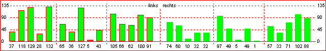
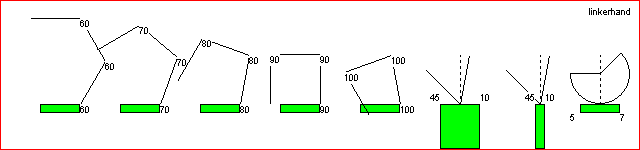
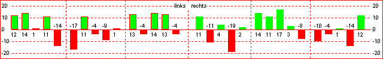
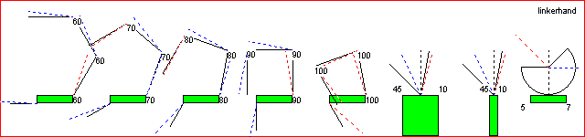

Goniografiek
Absolute weergave


Grafische weergave van de buiging van de gewrichten van de LINKERHAND.
Als de patient zijn handen naar elkaar toelegd, met de rug op de tafel,
ziet men schematisch dit beeld.
Het groene vlak is de basis van de hand.
De eerste 5 plaatjes stellen de 5 vingers voor.
Bij ieder gewricht staat de hoek aangegeven.
Zo zien we in het eerste plaatje dat alle vinger gewrichten slechts een hoek van 60 graden kunnen maken.
Het zesde plaatje stelt de buiging van het polsgewricht in het horizontale vlak voor.
Het zevende plaatje stelt de buiging van het polsgewricht in het vertikale vlak voor.
Het achtste plaatje stelt de rotatie van het polsgewricht voor.
Omdat de rotatie van de pols zeer beperkt is, heb ik de hoek versterkt getekend, zodat toch nog een goede visualisatie wordt verkregen. De werkelijke hoeken staan er numeriek onder.
Relatieve weergave


Hier wordt een meting vergeleken met een vorige meting.
De globale opbouw van het plaatje is identiek.
Als we naar het eerste plaatje kijken, zien we per gewricht een stippellijn getekend.
Deze stippellijn representeert de vorige meting.
Als de huidige meting beter is dan de vorige meting, is de stippellijn blauw gekleurd,
is de huidige meting een verslechtering (t.o.v. de vorige meting) dan krijgt de stippellijn een rode kleur.
Op de wijze kan snel per gewricht de verbetering of verslechtering worden gezien.
Echter ...
... de totale buiging van de gehele vinger gaat nu verloren.
Daarom is onderaan de hand een extra lurfje getekend, dat de buiging van de totale vinger en de verbetering / verslechtering aangeeft.
Het duidelijkst is dit te zien in het vierde plaatje: de huidige totale buiging is 3*90 graden, het lurfje wijst dus loodrecht naar beneden (dus precies zoals je het topje van de vinger zult zien). er is een blauwe stippellijn bij het lurfje te zien, hetgeen duidt op een verbetering van de buiging van de totale vinger.
De buiging in het horizontale vlak, linksom een blauw stipplelijntje (een forse verbetering), rechtom een rood stippellijntje dus een verslechtering.
Voor de buiging in het vertikale vlak en de rotatie geldt hier hetzelfde.